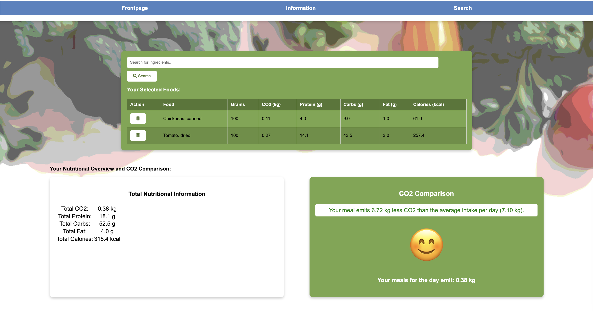

Role: Full-Stack Developer & UX Researcher
Tech Stack: Python (Flask), SQLite3, JavaScript, Google Charts API, HTML5 / CSS3
Context: Aalborg University (Institute of Computer Science) – Web Solution Development
Timeframe: Fall 2024
Overview: While many young consumers aim to adopt climate-conscious diets, balancing environmental impact with proper nutritional intake remains difficult without accessible tools. This full-stack web application integrates Denmark's official carbon dataset (Den Store Klimadatabase) with nutritional data to provide users with a dynamic meal-building interface, instant carbon calculations, and interactive visualizations benchmarking daily choices against national averages.

The platform is architected around a normalized SQLite relational database and a Flask backend. It supports secure session handling, an interactive multi-ingredient meal cart with dynamic recalculation, and automated generation of Google Charts to deliver clear, actionable feedback on dietary balance and environmental impact.
Normalizes reference dataset entries per 100g, recalculates caloric density via macronutrient weighting (4P + 4C + 9F), and scales kg CO&sub2; emissions to custom portion sizes.
Structured SQLite schema linking user accounts (bruger), baseline climate datasets (Food_product), and user meal logs (UserFoodLog) using foreign keys.
Maintains dynamic meal building state within Flask user sessions, allowing ingredient addition, item removal, and aggregate recalibration without unnecessary DB roundtrips.
Dynamic Google Charts rendering macronutrient distribution donuts and calorie vs. CO&sub2; scatter plots compared against the Danish national daily baseline (7.10 kg CO&sub2;).
The backend coordinates user input with reference food data, computing scaled nutritional and emission values and synchronizing the user's active session state:
# Dynamic portion scaling and meal cart state handling
@app.route("/add_food", methods=["POST"])
def add_food():
product_name = request.form.get("Navn")
grams = float(request.form.get("grams", 0))
# Query baseline nutritional & climate metrics from SQLite
item = db.execute("SELECT * FROM Food_product WHERE Navn = ?", product_name).fetchone()
if item and grams > 0:
factor = grams / 100.0
protein = round(item["Protein"] * factor, 1)
carbs = round(item["Kulhydrat"] * factor, 1)
fat = round(item["Fedt"] * factor, 1)
calories = round((protein * 4) + (carbs * 4) + (fat * 9))
co2_kg = round((item["CO2"] * grams) / 1000.0, 3)
# Append to active session and update meal totals
selected_foods = session.get("selected_foods", [])
selected_foods.append({
"name": product_name, "grams": grams,
"protein": protein, "carbs": carbs, "fat": fat,
"calories": calories, "co2": co2_kg
})
session["selected_foods"] = selected_foods
return redirect("/search")